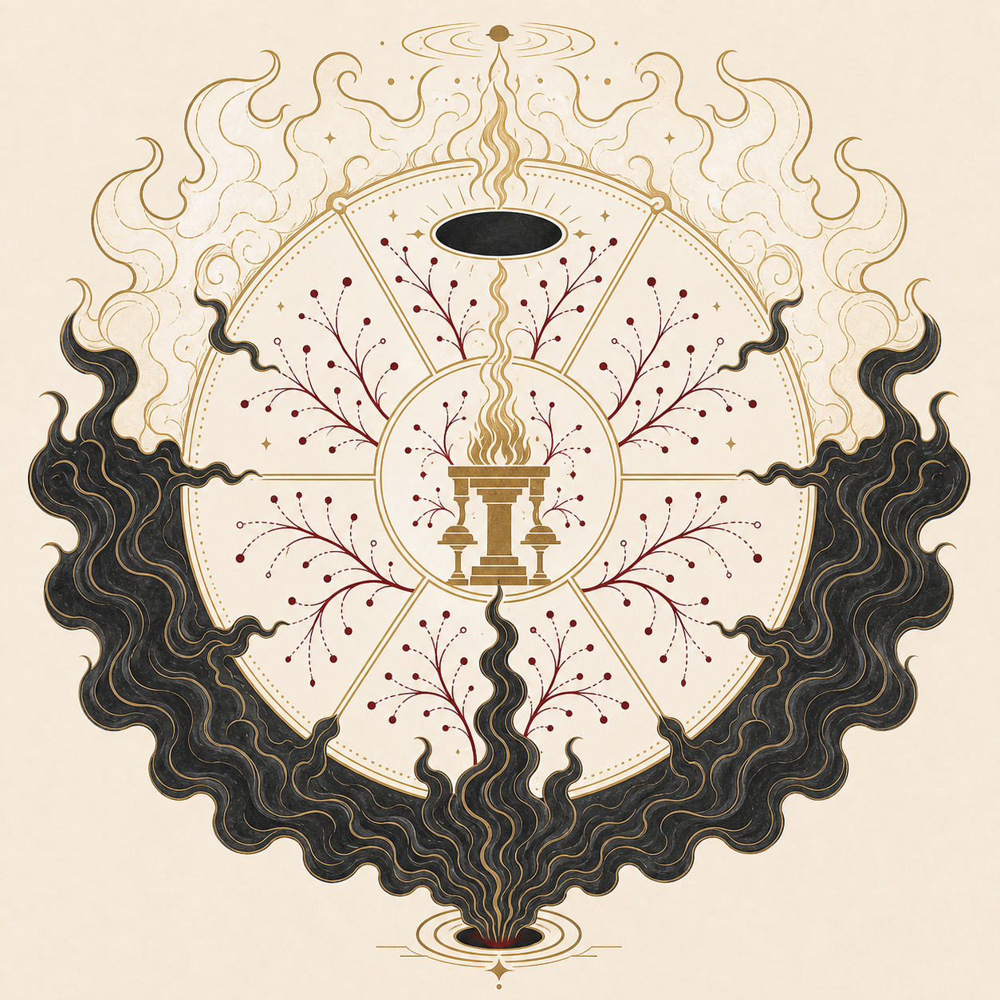
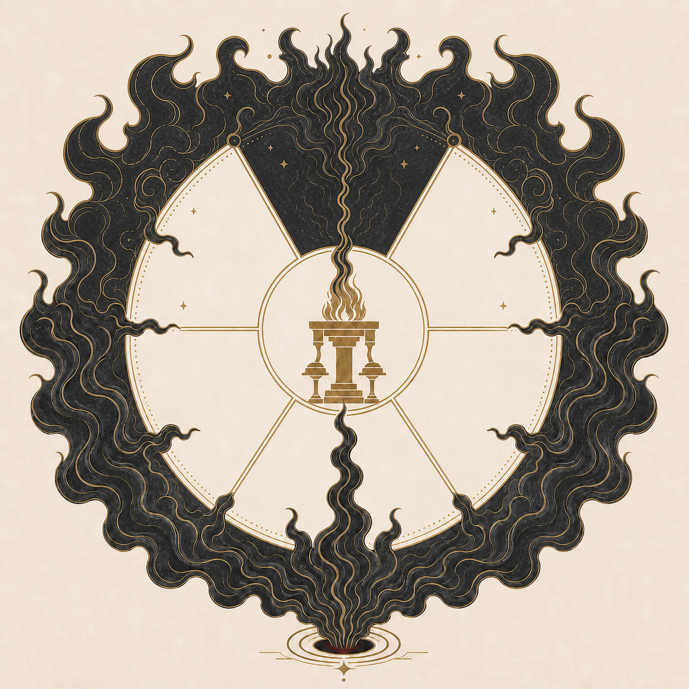

DARC
Drūz-Ahreman Research Corpus
A Digital Tool for Reconfiguring Evil Principles in Selected Middle Persian Texts from Ninth-Century Iran
Mazdyasnian Cosmology
Regions

DARC
A Digital Tool for Reconfiguring Evil Principles in Selected Middle Persian Texts from Ninth-Century Iran
